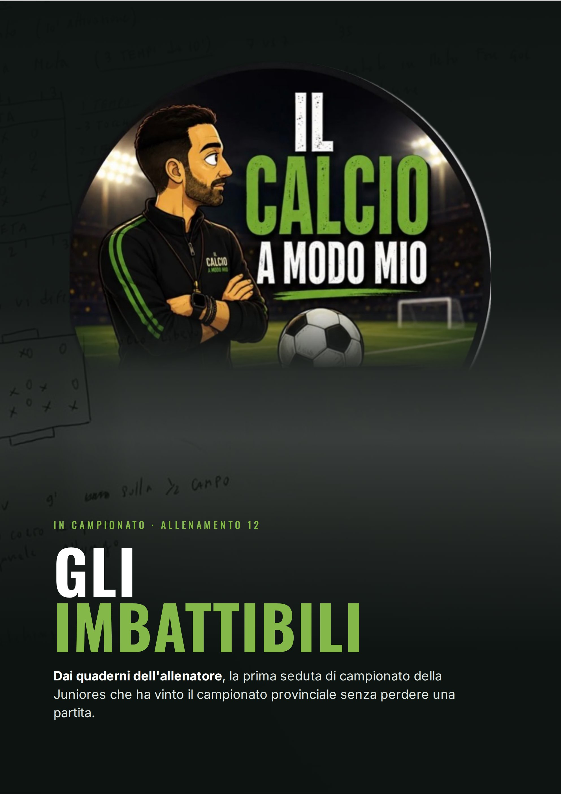
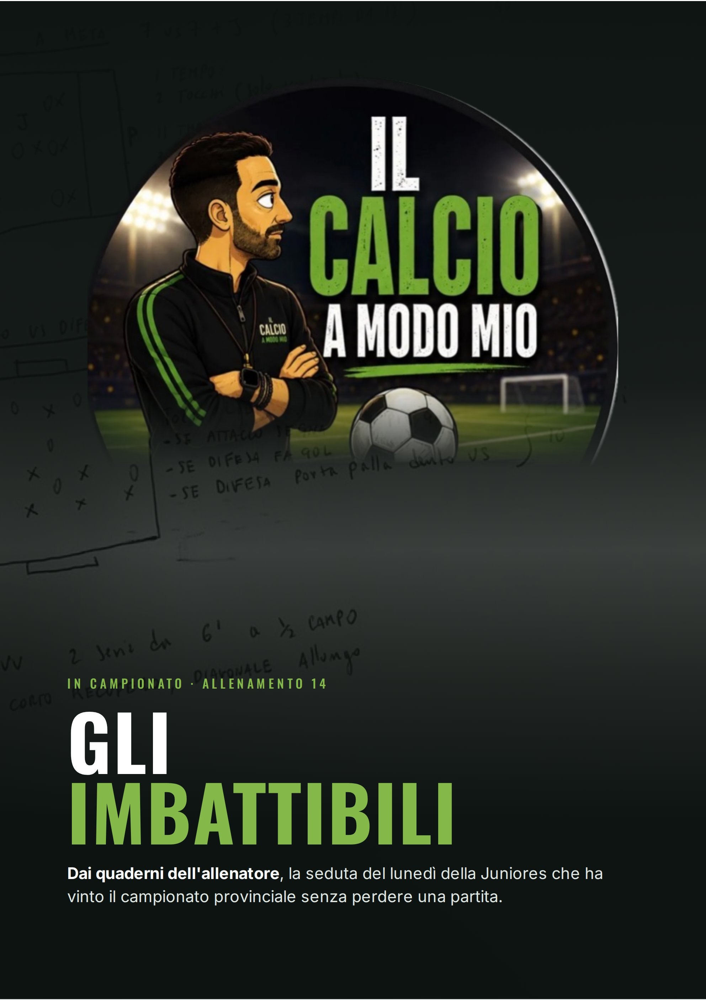
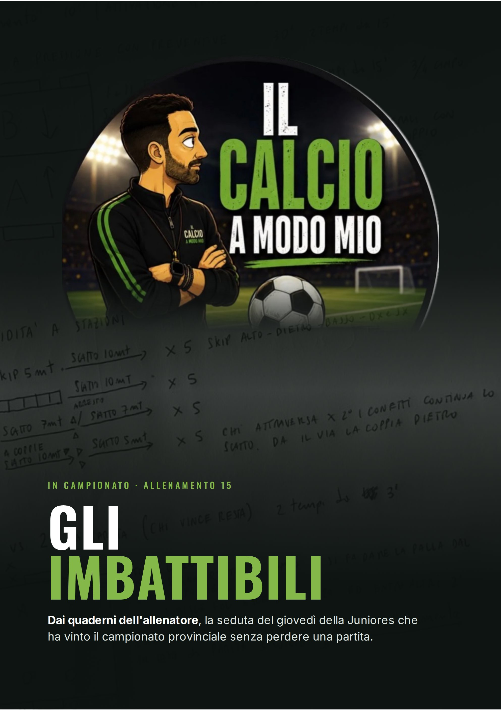
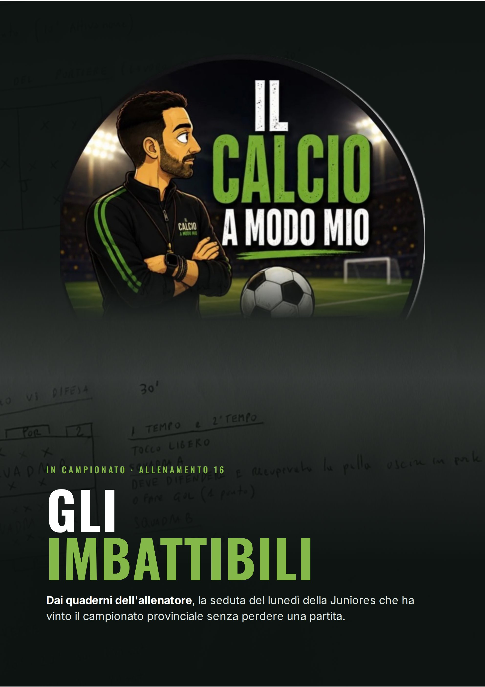
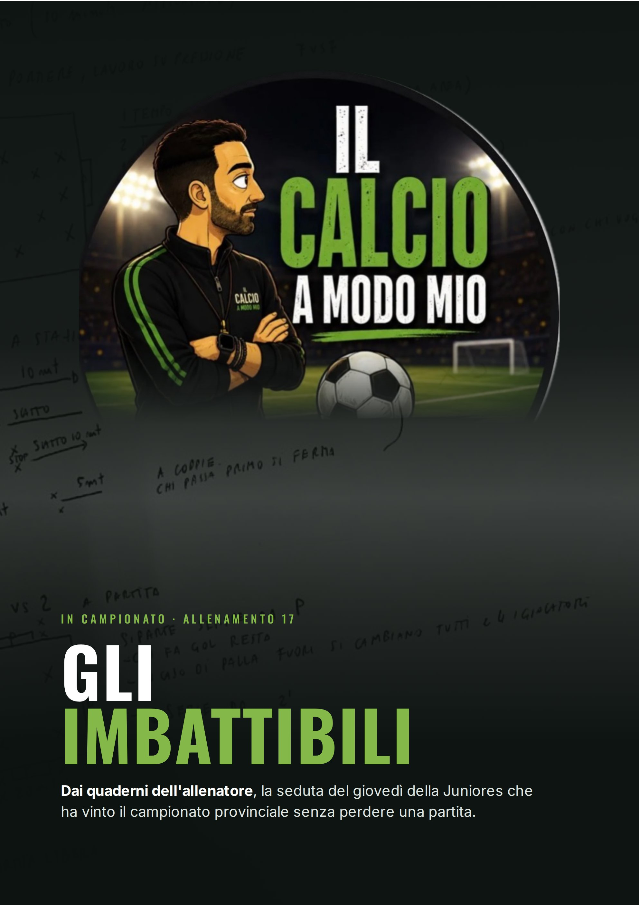
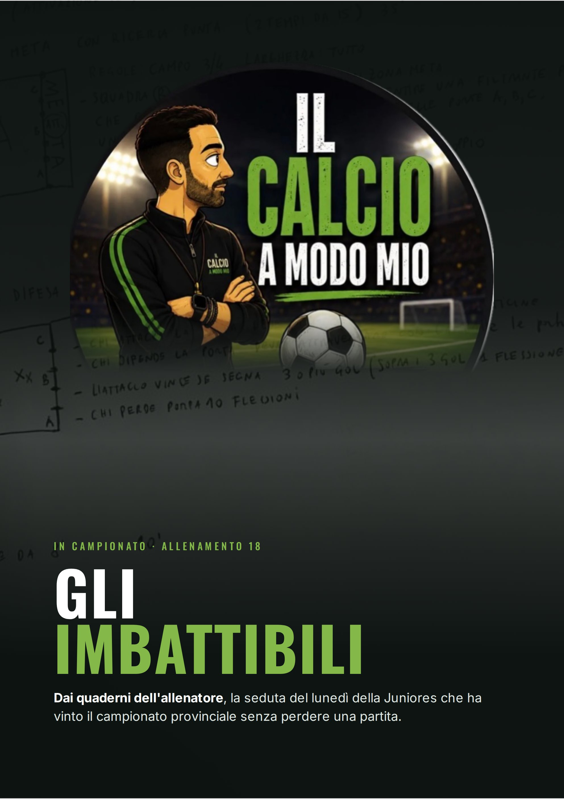

Questi sono gli allenamenti veri della Juniores provinciale che ha vinto il campionato senza perdere una partita, trascritti dai quaderni dell'allenatore seduta per seduta. Si parte dall'ultima seduta del precampionato (Allenamento 11) e si arriva alla quarta settimana di campionato.
In campionato la settimana cambia: si lavora il lunedì e il giovedì. Dopo ogni giovedì trovi la partita del fine settimana, con il risultato e le statistiche: così si vede cosa è successo in campo dopo il lavoro della settimana. Quattro partite, quattro vittorie, 11 gol fatti e 3 subiti.
Per ogni allenamento c'è la scheda della seduta (durata, programma e barra dei tempi) e una pagina per ogni esercitazione con obiettivo, schema, organizzazione, svolgimento e punti chiave. Le partite a tema hanno le regole tempo per tempo.
Come leggere gli schemi
Difensori e squadra di riferimento
Attaccanti e avversari
Portiere
Jolly e sponde
Movimento del giocatore
Passaggio, lancio o cross
Il libro
La stagione di questa squadra è raccontata nel libro “Gli Imbattibili”, su Amazon. Il libro racconta cosa è successo. Questi allenamenti mostrano come ci siamo arrivati.
In campionato
Indice
11
Allenamento 11
Rapidità e gioco con le sponde · 75' + suicidi
p. 4
12
Allenamento 12 · lunedì
Arrivare in meta e attacco contro difesa · circa 100'
p. 8
13
Allenamento 13 · giovedì
Gioco verticale, rapidità e palle inattive · circa 92'
+ la partita: Euro Calcio Firenze 2-4 Spartaco Banti Barberino
p. 12
14
Allenamento 14 · lunedì
Gioco verticale e difesa in superiorità · circa 100'
p. 18
15
Allenamento 15 · giovedì
Pressione, preventive e rapidità · circa 76' + suicidi
+ la partita: Spartaco Banti Barberino 1-0 Fiesole
p. 22
16
Allenamento 16 · lunedì
Ricerca del portiere e pressione · circa 85'
p. 28
17
Allenamento 17 · giovedì
Ricerca del portiere, pressione e rapidità · circa 80'
+ la partita: Sagginale 1-5 Spartaco Banti Barberino
p. 32
18
Allenamento 18 · lunedì
Gioco sulla punta e uscita dalla difesa · circa 100'
p. 37
19
Allenamento 19 · giovedì
Rapidità e attacco alla meta · circa 80'
+ la partita: Spartaco Banti Barberino 1-0 Florence
p. 41
Precampionato · Settimana 3
Allenamento 11
Durata
75' + suicidi
Giocatori
16 per campo
Campo
20 × 20 m
Focus
Rapidità e gioco con le sponde
Programma della seduta
I
Riscaldamento
Attivazione
10'
II
Rapidità a stazioni
4 stazioni, ognuna chiusa da 10 m di sprint · 8 volte per stazione
20'
III
Partita 4 contro 4 con 4 sponde
Campo 20 × 20 · 2 tocchi, sponde a 1 tocco · gol valido solo di prima su passaggio della sponda · 5 serie da 5'
25'
IV
Partita libera
2 tempi da 10'
20'
V
Suicidi
Per chi ha perso la partita a sponde
–
10'
Rapidità · 20'
4c4 + sponde · 25'
Partita libera · 20'
Il filo della seduta
Una seduta corta e intensa: prima la rapidità, poi una partita in spazi stretti dove si segna solo di prima dopo il passaggio della sponda. Chi gioca deve cercare il compagno fuori dal campo e attaccare subito la porta.
Esercitazione II
Rapidità a stazioni
20 minuti4 stazioni8 volte per stazione
Obiettivo: rapidità e reattività. Come negli Allenamenti 7 e 9 ogni stazione finisce con uno sprint di 10 metri, ma le ripetizioni salgono a 8.
1
Skip + sprint
5 m di skip, poi 10 m di sprint
8 volte
2
Scaletta + sprint
scaletta, poi 10 m di sprint
8 volte
3
Slalom + sprint
slalom tra 4 paletti, poi 10 m di sprint
8 volte
4
Salto + sprint
salto sul posto da mezzo squat, poi 10 m di sprint
8 volte
Organizzazione
4 stazioni in sequenza
4 paletti, una scaletta, 10 m segnati dopo ogni stazione
Svolgimento
Si fanno le 8 ripetizioni di una stazione e si passa alla successiva, dalla 1 alla 4.
Punti chiave
Massima velocità in ogni sprint
Dal mezzo squat spingere forte e ripartire subito
Recuperare completamente prima della ripetizione successiva
Esercitazione III
Partita 4 contro 4 con 4 sponde
5 serie da 5'4 contro 4 + 4 sponde per squadraCampo 20 × 20 m
Obiettivo: giocare in spazi stretti e veloci usando il compagno fuori dal campo. Il gol vale solo se si segna di prima sul passaggio della sponda.
Organizzazione
Quadrato di 20 × 20 m con due porte piccole
4 contro 4 dentro il campo
Ogni squadra ha 4 sponde fuori: due ai lati della porta che attacca e due sulle linee laterali
Svolgimento
Si gioca a 2 tocchi, le sponde a 1 tocco.
Il gol è valido solo se si segna di prima su passaggio della sponda.
Punti chiave
Cercare subito la sponda libera
Attaccare la porta per calciare di prima quando la palla torna dentro
Chi difende chiude prima la linea verso la sponda
Esercitazione IV
Partita libera · 2 tempi da 10'
Partita senza vincoli di tocchi o di punteggio, prima dei suicidi.
Esercitazione V · suicidi per chi ha perso la partita a sponde
Chi perde: 5 suicidi · chi vince: 1 suicidio · pareggio: 3 suicidi a testa.

In campionato · Seduta del lunedì
Allenamento 12
Durata
circa 100'
Giocatori
7 contro 7
Campo
35 m + 2 mete da 5 m
Focus
Arrivare in meta e attacco contro difesa
Programma della seduta
I
Riscaldamento
Attivazione
10'
II
Partita a meta
7 contro 7 · 3 tempi da 10' · entrati in meta si segna in una delle 3 porticine · tocchi che scendono da 3 a 2
35'
III
Attacco contro difesa
7 contro 7 · 2 tempi da 15' · tocco libero
35'
IV
Corsa con variazioni di velocità
Sulla metà campo: lato corto di recupero, diagonale in allungo
9'
V
Stretching
Defaticamento finale
10'
10'
Partita a meta · 35'
Attacco-difesa · 35'
9'
10'
Il filo della seduta
Comincia il campionato e cambia il ritmo della settimana: si lavora il lunedì e il giovedì.
Il lunedì si riparte dal pallone: una partita dove bisogna portare la palla in meta e poi
l'attacco contro difesa, con un lavoro di corsa corto prima dello stretching.
Esercitazione II
Partita a meta
35 minuti · 3 tempi da 10'7 contro 735 m + 2 mete da 5 m3 porticine per lato
Obiettivo: attaccare lo spazio e arrivare in meta palla al piede, poi rifinire subito l'azione scegliendo la porticina libera. Tempo dopo tempo i tocchi calano e il gioco si fa più veloce.
1° tempo · 10'
Massimo 3 tocchi
2° tempo · 10'
Massimo 2 tocchi
3° tempo · 10'
Massimo 2 tocchi
Su ripartenza (dopo un recupero palla) basta entrare in meta: è gol senza tirare nella porticina
Organizzazione
Campo di gioco lungo 35 m con una meta di 5 m per lato
3 porticine (1, 2, 3) dietro ogni meta
Due squadre da 7
Svolgimento
Ogni squadra attacca una meta. Una volta entrati in meta si fa gol in una delle tre porticine.
Nei tre tempi cambiano i tocchi (vedi riquadri sopra).
Punti chiave
Attaccare la meta appena c'è spazio
Entrati in meta, testa alta per scegliere la porticina libera
Chi difende protegge la meta prima delle porticine
Esercitazione III
Attacco contro difesa
35 minuti · 2 tempi da 15'7 contro 7Tocco libero
Obiettivo: sette contro sette su un campo con due porte, a tocco libero: chi attacca (rossi) cerca il gol, chi difende (blu) lavora di reparto e, se recupera, riparte verso l'altra porta.
Esercitazione IV
Corsa con variazioni di velocità · 9'
Si corre sulla metà campo per 9 minuti senza fermarsi:
lato corto di corsa lenta per recuperare, diagonale in allungo.
Esercitazione V · stretching · 10'
Allungamento dei principali gruppi muscolari a fine seduta.
In campionato · Seduta del giovedì
Allenamento 13
Durata
circa 92'
Giocatori
7 contro 7 · 4 contro 4
Campo
Mete e campo ridotto
Focus
Gioco verticale, rapidità e palle inattive
Programma della seduta
I
Riscaldamento
Attivazione
10'
II
Partita a meta
3 tempi da 10' · 3 tocchi, poi 2 tocchi e solo gioco verticale, poi 3 tocchi e su ripartenza basta entrare in meta
30'
III
Rapidità a stazioni
3 stazioni · 7 volte per stazione · l'ultima a coppie, partenza da seduti
15'
IV
Calci d'angolo e punizioni offensive
Lavoro sulle palle inattive a favore
25'
V
Partita 4 contro 4 + 4 jolly
4 tempi da 3' · 2 tocchi, sponde a 1 tocco · gol valido solo su sponda e di prima intenzione
12'
10'
Partita a meta · 30'
Rapidità · 15'
Palle inattive · 25'
4c4 · 12'
Il filo della seduta
Il giovedì riprende la partita a meta del lunedì e la rende più difficile: nel secondo tempo
si gioca solo in verticale. Poi rapidità, palle inattive offensive in vista della partita
e per chiudere un 4 contro 4 veloce dove si segna solo di prima sul passaggio della sponda.
Esercitazione II
Partita a meta
30 minuti · 3 tempi da 10'7 contro 735 m + 2 mete da 5 m3 porticine per lato
Obiettivo: la stessa partita del lunedì, con un vincolo in più: nel 2° tempo si gioca solo in verticale per arrivare in meta più in fretta.
1° tempo · 10'
Massimo 3 tocchi
2° tempo · 10'
Massimo 2 tocchi
Solo gioco verticale: passaggi in avanti, all'indietro o in diagonale, mai orizzontali
3° tempo · 10'
Massimo 3 tocchi
Su ripartenza (dopo un recupero palla) basta entrare in meta: è gol senza tirare nella porticina
Organizzazione
Come nell'Allenamento 12: campo di 35 m con una meta di 5 m per lato
3 porticine dietro ogni meta
Svolgimento
Ogni squadra attacca una meta. Una volta entrati in meta si fa gol in una delle tre porticine.
Punti chiave
Nel gioco verticale smarcarsi in avanti o in diagonale, mai in linea con chi ha palla
Dopo il recupero attaccare subito la meta
Esercitazione III
Rapidità a stazioni
15 minuti3 stazioni7 volte per stazione
Obiettivo: rapidità e reattività. L'ultima stazione diventa una sfida a coppie: si parte da seduti e vince chi arriva per primo.
1
Scaletta + sprint
scaletta, poi 10 m di sprint
7 volte
2
Ostacoli + sprint
5 m, 3 ostacoli, poi 10 m di sprint
7 volte
3
Sfida a coppie
partenza da seduti: vince chi entra per primo nella porticina
7 volte
Organizzazione
Una scaletta, 3 ostacoli, una porticina di coni
10 m di sprint dopo le prime due stazioni
Svolgimento
Si fanno le 7 ripetizioni di una stazione e si passa alla successiva.
Punti chiave
Massima velocità in ogni sprint
Da seduti rialzarsi e partire nello stesso movimento
Esercitazione IV
Calci d'angolo e punizioni offensive · 25'
Lavoro sulle palle inattive a favore in vista della partita. Schemi e posizioni in area: ogni allenatore le organizza come preferisce.
Esercitazione V
Partita 4 contro 4 + 4 jolly
12 minuti · 4 tempi da 3'4 contro 4 + 4 jolly per squadra2 tocchi · sponde 1 tocco
Obiettivo: come nell'Allenamento 11, giocare veloce in spazi stretti usando il compagno fuori dal campo: si segna solo di prima intenzione sul passaggio della sponda.
Organizzazione
4 contro 4 dentro il campo, con due porte piccole
Ogni squadra ha 4 jolly fuori: due ai lati della porta che attacca e due sulle linee laterali
Svolgimento
4 tempi da 3 minuti. Si gioca a 2 tocchi, le sponde a 1 tocco.
Il gol è valido solo su passaggio della sponda e di prima intenzione.
Punti chiave
Cercare subito la sponda libera
Attaccare la porta per calciare di prima quando la palla torna dentro
Il fine settimana
La partita
Dopo le sedute del lunedì e del giovedì, il risultato della partita.
Euro Calcio Firenze
2 – 4
Spartaco Banti Barberino
PRIMO TEMPO 1 – 4 · SECONDO TEMPO 1 – 0
Statistiche
3
Tiri in porta
17
2
Tiri fuori porta
10
2
Calci d'angolo
13
2
Fuorigioco
1
7
Falli
6
2
Cartellini gialli
0
0
Cartellini rossi
0
11
Calci di rinvio
2

In campionato · Seduta del lunedì
Allenamento 14
Durata
circa 100'
Giocatori
7 contro 7 + jolly · 7 contro 8
Campo
Mete con i portieri e metà campo
Focus
Gioco verticale e difesa in superiorità
Programma della seduta
I
Riscaldamento
Attivazione
10'
II
Partita a meta
7 contro 7 + jolly · 3 tempi da 12' · 2 tocchi solo verticale, poi 3 tocchi senza compagno di reparto, poi 2 tocchi
40'
III
Attacco contro difesa
7 contro 8 · 2 tempi da 15' · tocco libero · l'attacco vince con 3 gol, la difesa trovando il portiere o le porticine
35'
IV
Corsa con variazioni di velocità
2 serie da 6' sulla metà campo: lato corto di recupero, diagonale in allungo
12'
10'
Partita a meta · 40'
Attacco-difesa · 35'
CCVV · 12'
Il filo della seduta
Il lunedì riparte dalla partita a meta, questa volta con un jolly e con i portieri dietro le mete.
Poi un attacco contro difesa con la difesa in superiorità numerica (8 contro 7) e una posta in palio:
le flessioni. Si chiude con la corsa sulla metà campo.
Esercitazione II
Partita a meta
40 minuti · 3 tempi da 12'7 contro 7 + 1 jollyUn portiere dietro ogni meta
Obiettivo: la partita a meta degli Allenamenti 12 e 13 con un jolly sempre con chi ha palla. I vincoli cambiano ogni tempo: prima il gioco verticale, poi il passaggio a un altro reparto.
1° tempo · 12'
Massimo 2 tocchi
Solo gioco verticale: passaggi in avanti, all'indietro o in diagonale, mai orizzontali
2° tempo · 12'
Massimo 3 tocchi
Vietato passare al compagno di reparto
3° tempo · 12'
Massimo 2 tocchi
Organizzazione
Due squadre da 7 e un jolly (J) che gioca con chi ha palla
Una meta per lato e un portiere dietro ogni meta
Chi difende non può entrare in meta
Svolgimento
Ogni squadra attacca una meta. In meta entra solo la squadra che attacca e ha 3 secondi per andare alla conclusione contro il portiere.
Punti chiave
Usare il jolly per creare la superiorità
Entrati in meta, concludere subito: ci sono solo 3 secondi
Esercitazione III
Attacco contro difesa · 7 contro 8
35 minuti · 2 tempi da 15'7 attaccanti contro 8 difensoriTocco libero10 flessioni
Obiettivo: la difesa lavora in superiorità numerica e, quando recupera, deve uscire con la palla. Per fare punto la difesa deve trovare il portiere o attraversare le porticine.
Regole · 15' per tempo
Tocco libero
L'attacco vince se segna 3 o più gol
La difesa fa punto se trova il portiere o attraversa una delle due porticine
10 flessioni per chi vince
Esercitazione IV
Corsa con variazioni di velocità · 2 serie da 6'
Come nell'Allenamento 12 ma in 2 serie da 6' sulla metà campo:
lato corto di corsa lenta per recuperare, diagonale in allungo.

In campionato · Seduta del giovedì
Allenamento 15
Durata
circa 76' + suicidi
Giocatori
Due squadre · 2 contro 2
Campo
3/4 di campo · campo ridotto
Focus
Pressione, preventive e rapidità
Programma della seduta
I
Riscaldamento
Attivazione generale
10'
II
Partita a pressione con preventive
3/4 di campo · 2 tempi da 15' con le stesse regole · 2 tocchi · gol doppio con regole diverse per le due squadre
30'
III
Rapidità a stazioni
4 stazioni · 5 volte per stazione · l'ultima a coppie
15'
IV
2 contro 2 a partita
Chi vince resta · 4 serie da 1'30" · chi perde fa i suicidi a fine allenamento
6'
V
Partita libera
Poi i suicidi per chi ha perso il 2 contro 2
15'
10'
Pressione · 30'
Rapidità · 15'
2c2
Partita · 15'
Il filo della seduta
Il giovedì si lavora sulla pressione: una squadra è premiata se attacca in fretta dopo il recupero,
l'altra se recupera palla nella metà campo avversaria. Chi non pressa resta scoperto, per questo servono le
preventive. Poi rapidità, un 2 contro 2 dove chi perde paga e la partita libera.
Esercitazione II
Partita a pressione con preventive
30 minuti · 2 tempi da 15'Stesse regole nei due tempi3/4 di campo2 tocchi
Obiettivo: pressare e attaccare subito dopo il recupero. Le due squadre hanno regole diverse: chi attacca in fretta da una parte, chi recupera alto dall'altra. Per non farsi sorprendere bisogna tenere le marcature preventive.
Squadra A · attacca in alto
Massimo 2 tocchi
Si segna nella porta o attraversando le porticine laterali
Se ci arriva con massimo 4 passaggi dal recupero o dalla ripartenza del portiere: gol doppio
Squadra B · attacca in basso
Massimo 2 tocchi
Se recupera palla nella metà offensiva e segna: gol doppio
Organizzazione
3/4 di campo con due porte e i portieri
Due porticine laterali ai lati della porta che attacca la squadra A
Svolgimento
Due tempi da 15' con le stesse regole: la squadra A cerca di attaccare in pochi passaggi, la squadra B di riconquistare palla nella metà campo avversaria.
Punti chiave
Chi attacca lascia sempre qualcuno in marcatura preventiva
Dopo il recupero, verticalizzare subito
Chi perde palla aggredisce subito
Esercitazione III
Rapidità a stazioni
4 stazioni5 volte per stazioneL'ultima a coppie
Obiettivo: rapidità, cambi di ritmo e arresti. Ogni stazione finisce con uno scatto, l'ultima è una sfida a coppie.
1
Skip + scatto
5 m di skip (alto, dietro, basso, destro e sinistro), poi 10 m di scatto
5 volte
2
Scaletta + scatto
scaletta, poi 10 m di scatto
5 volte
3
Scatto con arresto
7 m di scatto, arresto al cono, altri 7 m di scatto
5 volte
4
Sfida a coppie
10 m di scatto fino ai conetti, poi 5 m: chi passa per secondo tra i conetti continua lo scatto. Il via lo dà la coppia dietro
5 volte
Organizzazione
Una scaletta, coni per l'arresto, conetti per la sfida a coppie
Svolgimento
Si fanno le 5 ripetizioni di una stazione e si passa alla successiva.
Punti chiave
Nell'arresto abbassare il baricentro e ripartire subito
Massima velocità in ogni scatto
Esercitazione IV
2 contro 2 a partita · chi vince resta
4 serie da 1'30"2 contro 2 + portieriTocco libero
Obiettivo: duelli continui a tocco libero: chi segna resta in campo, chi subisce gol lascia il posto a un'altra coppia.
Organizzazione
Campo ridotto con due porte e i portieri
Le coppie di ogni squadra aspettano il loro turno dietro la propria porta
Svolgimento
Tocco libero, 4 serie da 1'30".
Chi segna resta in campo e si fa dare la palla dal proprio portiere. Chi subisce gol esce ed entrano altri 2.
Punti chiave
Attaccare subito la porta
In due: uno attacca la palla, l'altro copre
Suicidi a fine allenamento · Esercitazione V · partita libera 15'
Chi perde il 2 contro 2: 5 suicidi · in caso di parità: 3 suicidi. Prima dei suicidi, 15' di partita libera.
Il fine settimana
La partita
Dopo le sedute del lunedì e del giovedì, il risultato della partita.
Spartaco Banti Barberino
1 – 0
Fiesole
PRIMO TEMPO 1 – 0 · SECONDO TEMPO 0 – 0
Statistiche
3
Tiri in porta
2
3
Tiri fuori porta
7
1
Calci d'angolo
5
2
Fuorigioco
3
22
Falli
24
5
Cartellini gialli
4
0
Cartellini rossi
0
8
Calci di rinvio
5

In campionato · Seduta del lunedì
Allenamento 16
Durata
circa 85'
Giocatori
7 contro 7 + jolly · due squadre
Campo
Due metà con portieri bersaglio
Focus
Ricerca del portiere e pressione
Programma della seduta
I
Riscaldamento
Attivazione
10'
II
Ricerca del portiere · lavoro sulla pressione
7 contro 7 + jolly · 2 tempi da 15' · 3 tocchi, niente lancio · gol dopo il recupero nella metà offensiva = 5 punti · nel 2° tempo solo verticale
30'
III
Attacco contro difesa
2 tempi · tocco libero · la squadra A difende e riparte verso le porticine o la porta
30'
IV
Navette
5' di 20"-20" sui 100 m · 5' di 15"-15" sugli 80 m · 5' di 10"-10" sui 16 m
15'
10'
Ricerca del portiere · 30'
Attacco-difesa · 30'
Navette · 15'
Il filo della seduta
Torna la ricerca del portiere del precampionato, ma ora diventa un lavoro sulla pressione:
niente lanci e un premio grosso (5 punti) per chi recupera palla nella metà offensiva e segna.
Poi un attacco contro difesa dove chi difende deve anche ripartire e per finire le navette.
Esercitazione II
Ricerca del portiere · lavoro sulla pressione
30 minuti · 2 tempi da 15'7 contro 7 + 1 jolly3 tocchiNo lancio
Obiettivo: la ricerca del portiere del precampionato diventa un lavoro sulla pressione. Senza lanci si deve arrivare al portiere palla a terra e il recupero alto vale molto di più.
1° tempo · 15'
Massimo 3 tocchi
No lancio
Se si recupera palla nella metà offensiva si può fare gol: vale 5 punti
2° tempo · 15'
Massimo 3 tocchi
Solo gioco verticale, no lancio
Se si recupera palla nella metà offensiva si può fare gol: vale 5 punti
Organizzazione
Campo diviso in due metà, un portiere bersaglio per lato
Due squadre da 7 e un jolly (J) con chi ha palla
Svolgimento
Ogni squadra cerca di far arrivare la palla al portiere del lato che attacca. Il gol si può fare solo dopo un recupero nella metà offensiva.
Punti chiave
Pressione immediata quando si perde palla
Dopo il recupero alto attaccare subito la porta
Esercitazione III
Attacco contro difesa
30 minuti · 2 tempiTocco liberoStesse regole nei due tempi
Obiettivo: come nell'Allenamento 14, chi difende non deve solo recuperare palla ma anche uscire bene: verso le porticine laterali o verso la porta.
Squadra A · difende
Recuperata la palla deve uscire nella porticina 1 o 2: 1 punto
Oppure fare gol: 1 punto
Squadra B · attacca
Deve fare gol
Esercitazione IV
Navette · 15'
5'
20" di corsa e 20" di recupero · navette sui 100 m
5'
15" di corsa e 15" di recupero · navette sugli 80 m
5'
10" di corsa e 10" di recupero · navette sui 16 m (dal fondo campo al limite dell'area)

In campionato · Seduta del giovedì
Allenamento 17
Durata
circa 80'
Giocatori
7 contro 7 · 2 contro 2
Campo
Metà campo larga quanto l'area
Focus
Ricerca del portiere, pressione e rapidità
Programma della seduta
I
Riscaldamento
Attivazione
10'
II
Ricerca del portiere · lavoro sulla pressione
7 contro 7 · 2 tempi · 2 tocchi, niente lancio · 1, 2 o 3 punti · nel 2° tempo senza compagno di reparto
30'
III
Rapidità a stazioni
4 stazioni · 5 volte per stazione · l'ultima a coppie, partenza da seduti
15'
IV
2 contro 2 a partita
Campo 20 × 20 m · si parte sempre dal portiere · chi fa gol resta · 4 serie da 1'30"
6'
V
Partita libera
Per chiudere la seduta
–
10'
Ricerca del portiere · 30'
Rapidità · 15'
2c2
Partita libera
Il filo della seduta
Il giovedì riprende la ricerca del portiere del lunedì e la rende più ricca: a 2 tocchi e con tre
punteggi diversi, dal passaggio al portiere fino al gol dopo il recupero alto. Nel secondo tempo si aggiunge il
divieto di passare al compagno di reparto. Poi rapidità, 2 contro 2 e partita libera.
Esercitazione II
Ricerca del portiere · lavoro sulla pressione
30 minuti · 2 tempi da 15'7 contro 7Metà campo larga quanto l'area2 tocchi · no lancio
Obiettivo: rispetto al lunedì i tocchi scendono a 2 e i punti premiano tre cose diverse: trovare il portiere, trovarlo partendo da dietro e segnare dopo il recupero alto.
1° tempo · 15'
Massimo 2 tocchi · no lancio
Passaggio al portiere: 1 punto
Passaggio al portiere dalla metà difensiva: 2 punti
Palla recuperata nella metà offensiva: si deve cercare il gol, 3 punti
2° tempo · 15'
Stesse regole del 1° tempo
Vietato passare al compagno di reparto (gli attaccanti possono passarla a chi vogliono)
Organizzazione
Metà campo larga quanto l'area di rigore, divisa in due
Un portiere bersaglio per lato
Svolgimento
Ogni squadra cerca il portiere del lato che attacca. Dopo un recupero nella metà offensiva non si cerca il portiere ma il gol.
Punti chiave
Costruire da dietro per i 2 punti
Pressione alta per i 3 punti
Esercitazione III
Rapidità a stazioni
15 minuti4 stazioni5 volte per stazione
1
Scaletta + scatto
scaletta, poi 10 m di scatto
5 volte
2
Skip + scatto
5 m di skip avanti e indietro, poi scatto
5 volte
3
Scatto con stop
5 m di scatto, stop al cono, poi 10 m di scatto
5 volte
4
Sfida a coppie
partenza da seduti, 8 m fino ai conetti, poi 5 m: chi passa per primo si ferma
5 volte
Esercitazione IV
2 contro 2 a partita · 4 serie da 1'30"
Campo 20 × 20 m con due porte e i portieri
Si parte sempre dal portiere
Chi fa gol resta
Se la palla esce si cambiano tutti e 4 i giocatori
Esercitazione V · partita libera
Partita senza vincoli per chiudere la seduta.
Il fine settimana
La partita
Dopo le sedute del lunedì e del giovedì, il risultato della partita.
Sagginale
1 – 5
Spartaco Banti Barberino
PRIMO TEMPO 1 – 2 · SECONDO TEMPO 0 – 3
Statistiche
2
Tiri in porta
13
3
Tiri fuori porta
5
2
Calci d'angolo
5
1
Fuorigioco
4
18
Falli
10
1
Cartellini gialli
2
2
Cartellini rossi
0
7
Calci di rinvio
2

In campionato · Seduta del lunedì
Allenamento 18
Durata
circa 100'
Giocatori
Due squadre
Campo
3/4 di campo, tutta la larghezza
Focus
Gioco sulla punta e uscita dalla difesa
Programma della seduta
I
Riscaldamento
Attivazione
10'
II
Partita a meta con ricerca della punta
2 tempi da 15' · 2 tocchi · la squadra B cerca la punta in meta, scarico e filtrante attraverso le porte A, B, C · la squadra A deve fare gol
35'
III
Attacco contro difesa
2 tempi da 15' · chi attacca cerca il gol, chi difende esce dalle porticine A, B, C · chi perde fa 10 flessioni
35'
IV
Corsa con variazioni di velocità
2 ripetute da 8' sulla metà campo: lato corto di recupero, diagonale in allungo
20'
10'
Meta e punta · 35'
Attacco-difesa · 35'
CCVV · 20'
Il filo della seduta
Una seduta sul gioco in verticale con la punta: trovarla in meta, giocare sul suo scarico e lanciare
il compagno in profondità con la filtrante. Poi l'attacco contro difesa, dove chi difende deve anche
uscire palla al piede dalle porticine, e la corsa con variazioni di velocità.
Esercitazione II
Partita a meta con ricerca della punta
35 minuti · 2 tempi da 15'3/4 di campo · tutta la larghezza2 tocchiPorte A, B, C
Obiettivo: giocare sulla punta: trovarla in zona meta, sfruttare il suo scarico e mandare un compagno in profondità con la filtrante.
Squadra B · ricerca della punta
Deve cercare l'attaccante in zona meta
Con il suo scarico l'attaccante deve permettere una filtrante per un compagno
Il compagno deve attraversare una delle porte A, B, C
Squadra A · gol
Deve fare gol nella porta con il portiere
Se recupera palla nella metà offensiva, il gol vale doppio
Organizzazione
3/4 di campo, tutta la larghezza
Da un lato una porta con il portiere, dall'altro la zona meta con le porte A, B, C
Svolgimento
Si gioca a 2 tocchi. Le due squadre hanno obiettivi diversi (vedi riquadri sopra).
Punti chiave
La punta riceve e scarica subito
Chi riceve lo scarico ha già visto il compagno che attacca la profondità
Esercitazione III
Attacco contro difesa
35 minuti · 2 tempi da 15'Porticine A, B, C10 flessioni
Obiettivo: come negli Allenamenti 14 e 16 chi difende, dopo il recupero, deve uscire palla al piede. Questa volta le porticine sono tre.
Regole
Chi attacca la porta deve fare gol e difendere le porticine
Chi difende la porta deve attraversare con la palla le porticine A, B o C
Chi vince
L'attacco vince se segna 3 o più gol (ogni gol oltre il terzo: 1 flessione in più per chi perde)
Chi perde fa 10 flessioni
Esercitazione IV
Corsa con variazioni di velocità · 2 ripetute da 8'
Come negli Allenamenti 12 e 14, sulla metà campo: lato corto di corsa lenta
per recuperare, diagonale in allungo. 2 ripetute da 8' (20' in tutto con il recupero).
In campionato · Seduta del giovedì
Allenamento 19
Durata
circa 80'
Giocatori
Due squadre + jolly · 2 contro 2
Campo
Mete con le porte · campo ridotto
Focus
Rapidità e attacco alla meta
Programma della seduta
I
Riscaldamento
Attivazione
10'
II
Rapidità a stazioni
3 sfide a coppie · 5 volte per stazione · chi arriva dopo fa altri 5 m
20'
III
Partita attacco alla meta
2 tempi da 15' · 2 tocchi · nel 2° tempo senza compagno di reparto
30'
IV
2 contro 2 con sponde
Tocco libero · 4 serie da 1'30" · gol con la sponda doppio
6'
V
Partita libera
Per chiudere la seduta
15'
10'
Rapidità · 20'
Attacco alla meta · 30'
2c2
Partita · 15'
Il filo della seduta
Si parte dalla rapidità, tutta a sfide a coppie con partenze diverse. Poi l'attacco alla meta
con il jolly, che nel secondo tempo diventa più difficile perché non si può passare al compagno di reparto.
Si chiude con un 2 contro 2 che premia il gioco con le sponde e la partita libera.
Esercitazione II
Rapidità a stazioni · sfide a coppie
20 minuti3 stazioni5 volte per stazione
Obiettivo: rapidità e reazione con tre partenze diverse. La sfida a coppie tiene alta l'intensità: chi perde paga con altri 5 metri.
1
Partenza da seduti
a coppie: 10 m fino ai conetti, poi 5 m · chi arriva dopo fa altri 5 m
5 volte
2
Partenza guardando dietro
a coppie: 10 m fino ai conetti, poi 5 m · chi arriva dopo fa altri 5 m
5 volte
3
Partenza con skip alto
a coppie: 10 m fino ai conetti, poi 5 m
5 volte
Organizzazione
Giocatori a coppie
Conetti a 10 m e poi a 5 m
Svolgimento
Si fanno le 5 ripetizioni di una stazione e si passa alla successiva.
Punti chiave
Partenza esplosiva qualunque sia la posizione
Guardando dietro: girarsi e partire in un solo movimento
Esercitazione III
Partita attacco alla meta
30 minuti · 2 tempi da 15'Due squadre + jolly2 tocchi
Obiettivo: attaccare la meta con un jolly sempre con chi ha palla. Nel 2° tempo il divieto di passare al compagno di reparto obbliga a cercare la linea davanti o dietro.
Organizzazione
Una meta per lato con la porta e il portiere dietro
Due squadre e un jolly (J) con chi ha palla
Svolgimento
1° tempo · 15': massimo 2 tocchi.
2° tempo · 15': massimo 2 tocchi, vietato passare al compagno di reparto (gli attaccanti con chi vogliono).
Punti chiave
Usare il jolly per creare la superiorità
Attaccare la meta appena si apre lo spazio
Esercitazione IV
2 contro 2 con sponde
4 serie da 1'30"2 contro 2 + 2 spondeTocco libero
Obiettivo: duelli a tocco libero usando le due sponde (J) fuori dal campo: il gol dopo la sponda vale doppio.
Due porte con i portieri, due sponde (J) sui lati lunghi
Tocco libero
Gol dopo la sponda: doppio
Esercitazione V · partita libera · 15'
Partita senza vincoli per chiudere la seduta.
Il fine settimana
La partita
Dopo le sedute del lunedì e del giovedì, il risultato della partita.